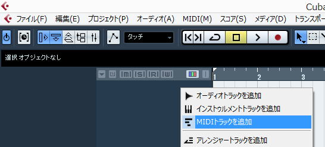
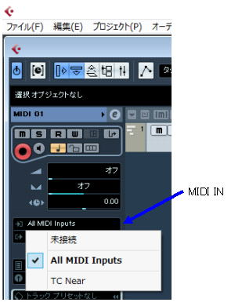

| TOP | weblog | TIPS | Works | リンク | 戻る |
| ＭＩＤＩトラックの追加 右クリックでMIDIトラックを追加 画面左に「M」「S」「R」「W」と書いてある列の、その文字の下あたりを右クリックすると「MIDIトラックを追加」という項目が出てく るのでそこでMIDIトラックを追加します。   MIDIポートの設定 「MIDI IN」の設定、下が「MIDI OUT」 MIDIトラックを作成すると一番左の列に作業ウィンドウが表示されます。 上から3段目あたりの横長のフィールド2つがMIDIイン・アウトの設定です。 （フィールドの先頭に、右矢印のアイコンが書いてあるところです） そのフィールドをクリックするとMIDI INのポート、OUTのポートを選択できます。 MIDIトラックの表示内の「◎」のところが録音ボタンです。これが赤色になっていると録音可能になります。  |